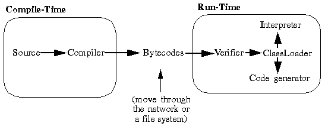

HotJava(tm): The Security Story HotJava(tm): The Security Story
HotJava(tm): The Security Story HotJava(tm): The Security StoryThe question of how to provide a secure environment for code to execute in doesn't have a single answer. HotJava has layers of interlocking facilities that provide defenses against a variety of attacks. These layers are:
Initially, the development team thought that by adding safety features to an existing language such as C++, the safety goals could be achieved. However, as work progressed it became clear that this strategy would not succeed without putting some restrictions on C++.
C++ has a series of facilities to control access to objects, but it also has ways to forge access to objects and to sub-parts of objects that defeat the access controls. The C++ facilities that allow forging have either been eliminated in Java or changed to make them safe. Most importantly, you can't do pointer arithmetic; in fact you can't modify pointers in any way. However, Java has true arrays instead of pointer arithmetic. And because the primary use of pointer arithmetic in C and C++ is to access arrays, programmers often don't notice the change. Another example is the "cast" operator: the Java compiler checks that a cast is legal, whereas C and C++ do not.
The tests range from verification that the format of the fragment is correct, to passing it through a simple theorem prover to establish that the code plays by the rules. The code is checked to ensure:
Consider the following Java code sample:
class vector {
int arr[];
int sum() {
int la[] = arr;
int S = 0;
for (int i=la.length; --i>=0;)
S += la[i];
return S;
}
}
The byte codes generated when the above code is compiled look like the following:Most stack based instruction sets don't limit what you can do with the stack and local variables. Conceptually, at any point in the program each slot in the stack and each local variable has a type. This collection of type information, i.e., all the slots and local variables, is called the type state of the execution frame. An important property of the type state is that this type can be determined statically by induction, i.e., before any program code is executed. As the runtime systems reads through a block of instructions, each instruction pops and pushes values of particular types. Instruction definitions are required to have the following inductive property:
Given only the type state before the execution of the instruction, the type state afterwards is determined.Given a straight-line block of code, i.e., no branches, and starting with a known stack state, the type state of each slot in the stack is known. For example:
iload_1 Load integer variable, stack type state=I iconst 5 Load integer constant, stack type state=II iadd Add two integers producing an integer, stack type state=IA number of stack-based instruction sets, like Smalltalk [Chambers92] and PostScript [Adobe85] do not have this property. For example, the definition of the PostScript add operator explicitly states "If both operands are integers and the result is within integer range, the result is an integer, otherwise the result is a real." In many situations this dynamic type behavior is considered to be an advantage, but HotJava needs to provide a secure execution environment and it must know the types of objects in order to guarantee a certain level of security.
In conjunction with the inductive property above we require that:
When there are two execution paths into the same point, they must arrive there with exactly the same type state.This requirement has several implications. For example, compilers cannot write loops that iterate through arrays, loading each element of the array onto the stack, effectively copying the array onto the stack. This behavior is prevented because the flow path into the top of the loop will have a different type state than the branch back to the top. Because all paths to a point are required to arrive with the same type state, the type state from any incoming path can be used to do further manipulations.
Code is checked for compliance with these rules by a part of the loader called the verifier. It traverses the byte codes, constructs the type state information, and verifies the types of the parameters to all the opcodes. The following illustration shows the flow of code from Java source code to execution by the runtime system.

The verifier acts as a gatekeeper by preventing the execution of imported code until it has passed the verifier's tests. When code verification is complete a number of important properties of the code are known:
These properties also provide a foundation for the security of the system:
When a class references another class, the runtime system first looks for it in the namespace of the built-ins, then in the namespace of the referencing class. There is no way that an imported class can "spoof" a built-in class. Built-ins can never accidentally reference classes in imported namespaces, they can only do it explicitly. Spoofing is prevented because the system always checks built-in classes first.
The file access primitives implement an access control list that controls read and write access to files by imported code (or code invoked by imported code). The defaults for these access control lists are very restrictive. If an attempt is made by a piece of imported code to access a file to which access has not been granted, a dialog box pops up to allow the user to decide whether or not to allow that specific access. These security policies err on the conservative side in order to ensure maximum security. This conservative approach may make writing some applets more difficult or awkward.
For network security, HotJava provides a variety of mechanisms that can provide information about the trustworthiness of imported code. These mechanisms cover a wide range of possibilities. At the simple end the system can check on the origin of a code fragment to determine if it came from inside or outside a firewall. At the sophisticated end of the range a mechanism exists whereby public keys and cryptographic message digests can be securely attached to code fragments that not only identify who originated the code, but guarantee its integrity as well. This latter mechanism will be implemented in future releases.
The security policies implemented by the runtime system can be dynamically adjusted based on the information available concerning the origin of a code fragment. The Socket class provides such an example.
The Socket class implements security policies that are adjusted to reflect the trustworthiness of the code that invoked it, and transitively, the code that invoked the invoker. The information about what code began the chain of execution is available to the class in the form of which namespace contains the invoking code and what parameters are associated with that class. The class loader puts the classes it has loaded in a specific namespace, allowing the Socket class to determine the network host from which a class is loaded.
Knowing the network host allows the HotJava security mechanism to determine whether the class originated inside or outside a firewall. Knowledgable users of HotJava can decide which category of hosts to trust when loading executable code. For example, the Socket class can implement the policy of only allowing new connections to be created that terminate at the host from whence the code was loaded. This restriction means that code loaded from outside a firewall cannot connect to other machines on the net behind the firewall. Code that comes from more trusted sources can be allowed more freedom to make connections to other machines. As an additional defense against untrusted sources HotJava's security can be set to prevent any code from being loaded. The level of security is configurable by HotJava users.